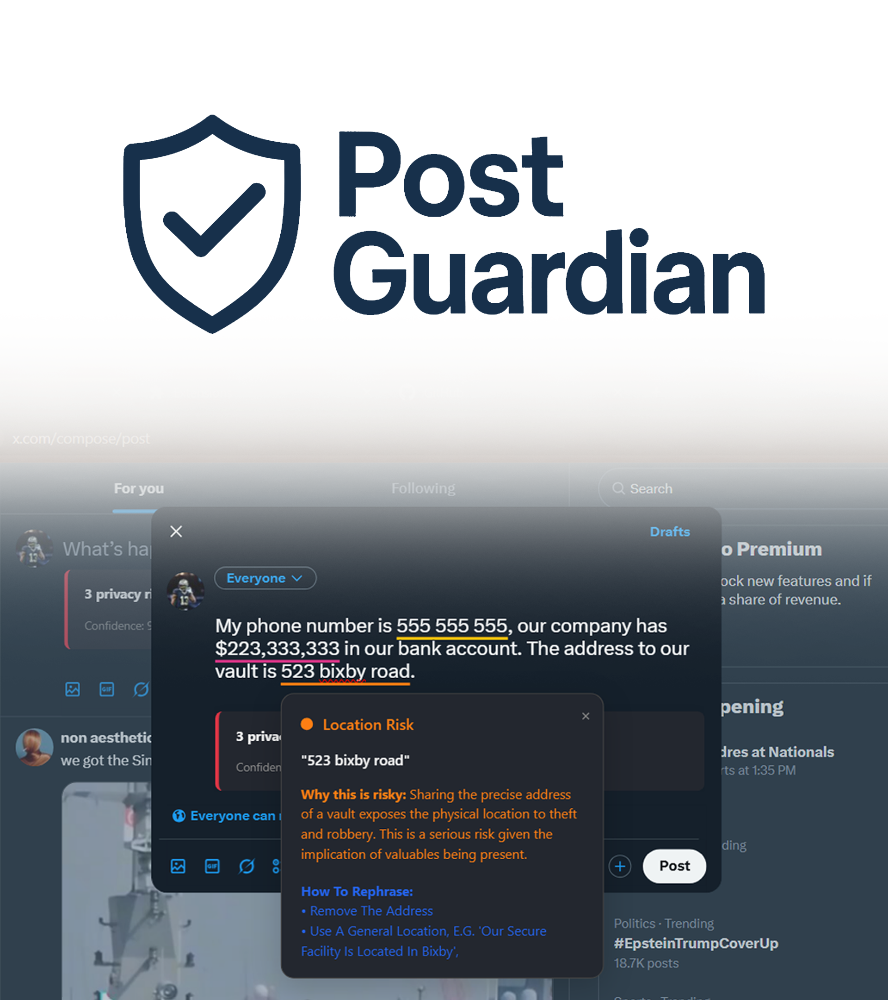

What is Post Guardian?
Post Guardian is a Chrome browser extension that sits between you and the "post" button. As you type a draft on social media, it analyzes the tone of your message in real time using the Gemini API and surfaces thoughtful, non-judgmental feedback.
The core idea: slow down the impulsive posting cycle. Whether you're venting frustration, sharing an opinion, or replying to a heated thread — Post Guardian gives you a moment to reconsider before something goes out publicly.

How It Works
Three steps from draft to decision — the whole flow happens in the browser, in real time.
Capture
Chrome Extension APIs detect when you're composing a post and capture the draft text as you type — without storing or transmitting anything until you ask for feedback.
Analyze
The draft is passed to the Gemini API via a carefully engineered prompt. The model evaluates tone — checking for aggression, negativity, misinformation risk, or anything you might regret later.
Reflect
Feedback appears directly in the extension popup — thoughtful, non-judgmental language that encourages you to reconsider, revise, or post with intention. You always have the final call.
Digital Mindfulness at Scale
The mission behind Post Guardian is simple: promote more intentional online communication without being preachy or blocking users from posting what they want.
Most social platforms are optimized for engagement, not thoughtfulness. Post Guardian works against that grain — adding one small moment of friction at exactly the right time.
The design challenge was making the feedback feel helpful, not judgmental. The prompts were iterated carefully to land somewhere between a thoughtful friend and a spell checker — constructive, not controlling.
Hack the 6ix 2025
Post Guardian was built in 24 hours at Hack the 6ix 2025 — one of Toronto's largest annual hackathons. The tight deadline forced us to prioritize: nail the core extension UX, get the Gemini API integration working cleanly, and make the feedback feel human.
The project was built collaboratively across Chrome Extension APIs, AI prompt engineering, and UX design — splitting responsibilities so we could move fast without stepping on each other.